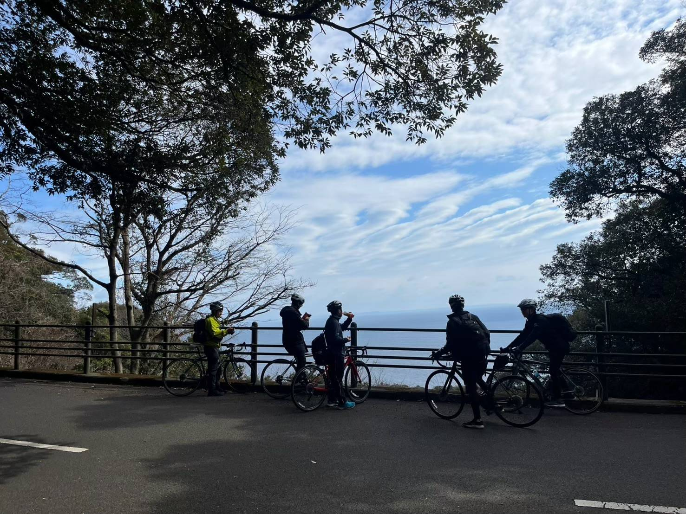

活動内容
1973年創設の「なかよしさいくる」は、東京大学を中心とするインカレ自転車旅サークルです。月1回の日帰りサイクリングや長期休暇の遠方合宿に加え、キャンプやレース等を行う自由な個人ラン、月1回の定例会など幅広く活動しています。大学1年からOBまでのメンバーが、各自のスタイルで自転車を楽しんでいます。
詳細はこちらから
1973年創設の「なかよしさいくる」は、東京大学を中心とするインカレ自転車旅サークルです。月1回の日帰りサイクリングや長期休暇の遠方合宿に加え、キャンプやレース等を行う自由な個人ラン、月1回の定例会など幅広く活動しています。大学1年からOBまでのメンバーが、各自のスタイルで自転車を楽しんでいます。
詳細はこちらから
ロードバイクってどんな乗り物？
魅力を紹介
自転車を解体して持ち運ぶ
どんなところでも行けちゃう
安全に走るために心がけていること
「ママチャリと何が違うの？」と聞かれますが、乗り心地が全然違います。タイヤが細く、ブレーキやハンドルも独特な形をしています。最初は慣れないかもしれませんが、慣れると驚くほど軽やかに走ります。新歓や普段の定期サイクリングなどでは自転車の貸し出しも行っているので、一度騙されたと思って体験しにきてください。初めての方も大歓迎です。

なかよしさいくるではサークルのランでのヘルメットの着用を義務付けています。また、集団走行時には手信号を用いたコミュニケーションや、ラン後にヒヤリハットの共有などを行い安全走行を心がけています。



よくある質問をまとめました。個別で質問を受け付けているので、各新歓SNSにてお問い合わせください。
入会や各種お問い合わせについては
公式SNSのDMにてご連絡ください。